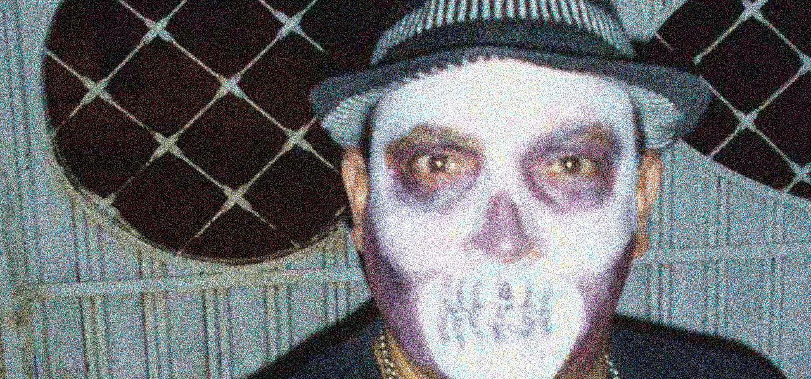
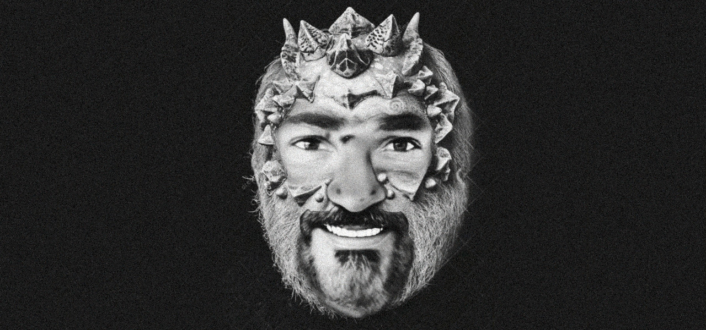

O perturbador numero 3
A Trindade Secreta
Não é só de alegria e diversão que vivem os Tripulantes, O Trivale/Zeca tem um lado oculto secreto e muitos estudiosos de todo mundo dedicaram suas vidas para entender o paradoxo matematico por traz dessa complexa Trigonometria!
Por algum motivo tudo que envolve a vida de Zeca e o Trivale sempre tem alguma relação matematica com Triangulos ou com Circulos e também com o numero 3, e isso passa despercebido pelos desavisados, mas ao ser estudado mais a fundo por especialistas, coisas insanas foram descobertas, e parece que é uma maneira dos integrantes de uma seita secreta se comunicarem sem serem descobertos, pois já conhecem os tais códigos Triplos...
Achou loucura? então continue lendo esse artigo até o final, se é que você vai aguentar, e depois tire suas próprias conclusões...
Pra começar Zeca faz aniversario no 3º Trimestre, no dia 23.. podendo significar que isso tudo já exista muito antes dele... curioso não?
então se prepare.. pois já deve ter percebido a quantidade exagerada de silabas "TRI" e numeros "3" que esse artigo contém.. isso não é um acaso!
Fonte: Facebook Original do Zeca - A Tripofobia [imagem editada]
Alguns investigadores encontraram esse simbolo que está na foto logo abaixo, de uma estrela feita por Zeca com uma letra Z na lateral da mesma, e como todos sabem o Sol é uma estrela e os Triciclistas estão sempre rumo ao Sol, mas o que nem todos percebem é que o simbolo de uma estrela como essa pode ser feito usando 3 Triangulos!
E se isso não foi bizarro o suficiente, Zeca incluiu sua letra inicial dentro que já é uma letra que pode ser feita com apenas 3 Linhas! Confira a imagem abaixo:
Fonte: Facebook Original do Zeca - Zestrela [imagem editada]
O nome de Zeca também tem alguns segredos, além do fato da letra Z ter 3 linhas como já mencionado, a soma do restante das letras também é 3, fora que dá pra escrever todas as letras de seu nome usando apenas 3 linhas cada, e a letra C de Zeca pode ser substituida por um K que também tem 3 linhas.
Zeca também tem 3 nomes em seu nome de registro: José Carlos Domingues, e seus 3 filhos também tem 3 nomes cada.
Curiosamente, em tempos antigos o Zeca abastecia o carro com 5 reais, o que é no minimo curioso... talvez por se tratar de um veiculo de 4 rodas o 3 seria o numero antesequente: 5, 4, e 3...
Fonte: Facebook Original do Zeca - Trilouco [imagem editada]
Já percebeu como um Triciclo é um Triangulo se visto de cima? alguns historiadores acreditam que isso esteja ligado de alguma forma ao simbolo iluminati, fora que Zeca tem 2 irmãos, formando assim 3 filhos da mesma mãe, um verdadeiro Triangulo familiar!
Zeca também tem 3 filhos, e também 3 celulares, 3 rodas, 3 empregos, 3 salários, 3 casas, playstation 3, 3 pernas, logo usa 3 pares de sapatos, já teve 3 carros: a variante, a brazilia e também o gol que por sinal tem 3 letras em seu nome.... Bem inTRInsico não acha?
Fonte: Facebook Original do Zeca - A Gambiarra [imagem editada]
Zeca também se relaciona com a IZA, que tem 3 letras em seu nome abreviado, e ele criou uma arte homenageando-a que pode ser vista na imagem abaixo, onde a palavra IZA ZECA se cruzam, formando uma especie de letra T se visto apenas as letras que compões esse cruzamento.
A letra T que é uma letra de 3 pontas e também a primeira letra do Trivale, de Triangulo, Travessia, Triciclo... e isso é no minimo inTRIgante..
Fonte: Facebook Original do Zeca - T da questão [imagem editada]
CIPA???
Se engana muito quem acredita logo de cara que CIPA tem o genérico significado de Convenção Interna de Prevenção de Acidentes, nome esse que é utilizado em diversas firmas do Brasil, atribuídos a funcionários que atuam em processos de segurança do trabalho.
Fonte: Facebook Original do Zeca - Tração [imagem editada]
No Trivale, o termo CIPA na verdade significa Companheirismo, Irmandade, Parceria e Amizade, significado esse que se destaca por seu poderoso Ciclo redundante, onde todas as palavras tendem a significar a exata mesma coisa!
Agora olha como podemos ir além, CIPA é uma redundancia, ou 1(um) loop infinito de 4(quatro) palavras, ou seja, o numero 14(quatorze), e considerando que 3(três) é o numero principal do Trivale, temos o então o resultado numero 3,14 (três virgula quatorze) que é o já conhecido numero de PI proposto pelo matematico galês Wiliam Jones, e é conhecido também como constante de arquimedes onde representa a relação entre o perimetro de uma circuferencia e seu diâmetro, resultando num Ciclo, que se conecta com a ideia descrita acima do Triangulo iluminati, combinando ambas temos um Triangulo Ciclico ou Triciclo onde o veículo é o simbolo principal de algum tipo de seita secreta, como pode conferir abaixo uma imagem desse misterioso culto.
Fonte: Facebook Original do Zeca - Rumo ao Culto Secreto Iluminati [imagem editada]
O simbolo de Triangulo junto ao Circulo em algumas culturas significa o Equilibrio, em outras, a antiga alquimia e até simbolos egipcios e espirituais, o que eles estão tentando esconder de nós? o que os Triciclistas fazem de fato na Travessia? Onde os iluminati estão atuando em meio a essa Atravessada? Os diretores do Trivale mentem e a verdade oculta talvez nunca seja descoberta...
. Fonte: Facebook Original do Zeca - Trinimigo [imagem editada]
Fonte: Grupo da familia do Zeca no Whatsapp - Tri-alma ou Trauma [imagem editada]
Veja os Creditos >
Epilogo
O Rumo ao sol
Pagina 6 de 6